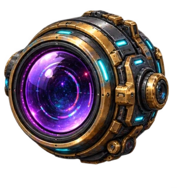
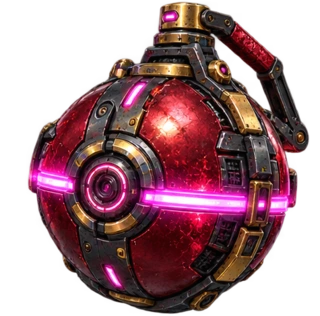
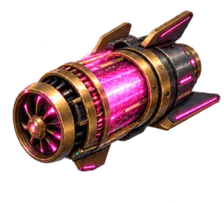
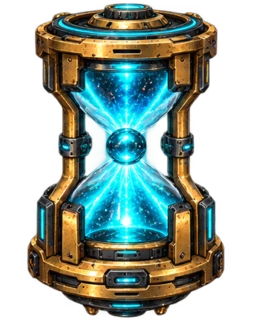
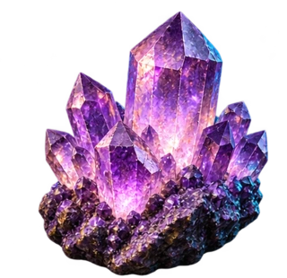
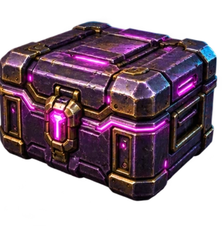
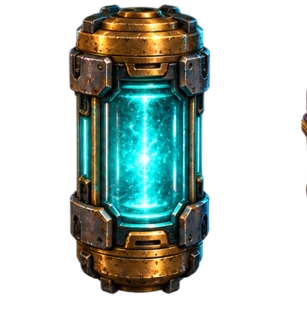
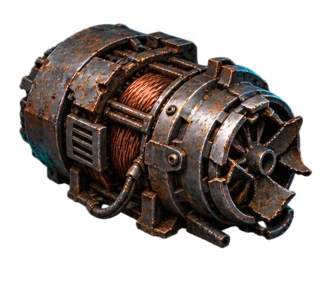

Time the swing. Take the gold.Sixty sectors beneath a city that never sleeps.
Space or tap to drop your claw. Mine credits. Build your rig.
Your progress saves to your Myelin session as you mine.
Reset all sectors, credits and upgrades for a fresh expedition?
Earn credits by hauling ore. Purchases and stock are saved by Myelin.
Reduced-motion preferences are respected. Music starts only after you enable it.
Watch the claw swing, then press Space, ↓ or tap the mine to cast. It grabs the first object in its path. Heavy objects reel in slowly.




Press Q or use Scan to toggle the prospecting overlay. It forecasts the first catch along the current angle and reveals value and weight. Sealed caches keep their value a surprise. Time your cast; the scan does not aim for you.
Complete the value quota AND the sector contract. Crystal survey needs crystals; salvage orders need scrap; power relay needs cells; vault breach needs armored vaults. The contract counter is displayed inside the mine. Armored vaults require one or two empty cracking hits before the final collection. Volatile mines drain 4–7 seconds when delivered: discard them with EMP. EMP protects the last objects needed for your contract. From sector 11, ore drifts. After sector 30, the swing accelerates and only one time cell is allowed. Stasis freezes ore and slows aiming for 6 seconds (F). Winch tuning permanently speeds up retrieval. Consecutive hauls build up to +25% value; empty returns and discarded catches reset the chain. Spend earned credits in the Item Store. X destroys a held object, E doubles winch speed, T adds time. P or Esc pauses.
You have three recovery charges for the expedition. Recovering a sector keeps its remaining ore and collected score; the same ore cannot earn credits twice. New expedition resets everything.
Myelin v0.31 executes and signs input tapes, earnings and purchases. Authority-signed off-chain host replay; no CKB settlement or redeemable tokens. This expansion starts a new 60-sector expedition; earlier 20-sector saves are archived separately. Original implementation inspired by classic Gold Miner and Lor3walker’s MIT project. Original imagegen environment and equipment art; original synthesized audio.